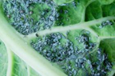
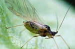

| Home |
| CRUCIFEROUS VEGETABLES |
MAJOR PESTS |
| 1. Diamond back moth |
| 2. Leaf webber |
| 3. Cabbage semilooper |
| 4. Cabbage butterfly |
| 5. Cabbage borer |
| 6. Mustard sawfly |
| 7. Cabbage aphid |
| 8. Cabbage flea beetle |
| Questions |
| Download Notes |
CRUCIFEROUS VEGETABLES :: MAJOR :: CABBAGE APHID
7. Cabbage aphid: Brevicoryne brassicae (Aphididae: Hemiptera)
Damage symptoms
| Colonies of aphid are found on tender shoots and suck sap from plant tissues. In case of severe infestation plants may completely dry up and die away. On larger plants, feeding damage results in curling and yellowing leaves, stunted plant growth, and deformed heads. White cast skin will be present at the base of the plant. |  |  |
Management
- Set up yellow sticky trap @ 10 / ha.
- Spray any one of the following:
- Dimethoate 30 EC 1000 ml/ha
- Methyl demeton 25 EC 1000 ml/ha
- Monocrotophos 36 WSC 625 ml/ha
- Neem oil 2.0 L/ha
- Azadirachtin 0.03% 2.5-5.0 L/ha
- Aphid skin is covered with waxy filaments and for better adherence on aphid body, add wetting agent in spray fluid.